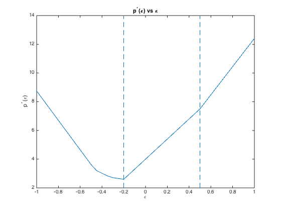

% Boyd & Vandenberghe "Convex Optimization" % Joëlle Skaf - 08/29/05 % (a figure is generated) % % Let p_star(epsilon) be the optimal value of the following problem: % minimize ||Ax + b + epsilon*d||_1 % Plots p_star(epsilon) versus epsilon and demonstrates the fact that it's % affine on an interval that includes epsilon = 0. % Input data A = [-2 7 1; ... -5 -1 3; ... -7 3 -5; ... -1 4 -4; ... 1 5 5; ... 2 -5 -1]; b = [-4 3 9 0 -11 5]'; d = [-10 -13 -27 -10 -7 14]'; epsilon = [-1:0.05:1]; p_star = zeros(size(epsilon)); fprintf(1,'Computing p*(epsilon) for -1 <= epsilon <= 1 ...'); for i=1:length(epsilon) cvx_begin quiet variable x(3); minimize ( norm( A*x + b + epsilon(i)*d, 1) ) cvx_end p_star(i)= cvx_optval; end fprintf(1,'Done! \n'); % Plots plot(epsilon, p_star) line([-.2 -.2], [2 14], 'LineStyle', '--') line([.5 .5], [2 14], 'LineStyle', '--') xlabel('\epsilon'); ylabel('p^*(\epsilon)'); title('p^*(\epsilon) vs \epsilon');
Computing p*(epsilon) for -1 <= epsilon <= 1 ...Done!
